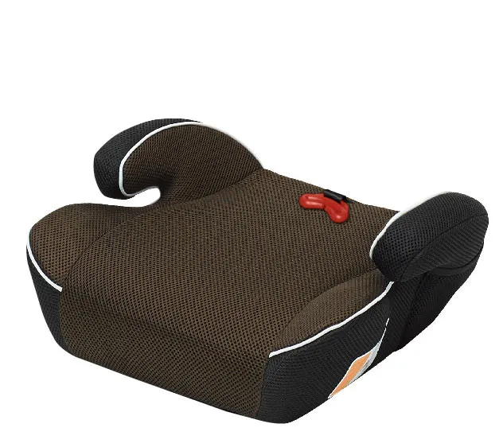
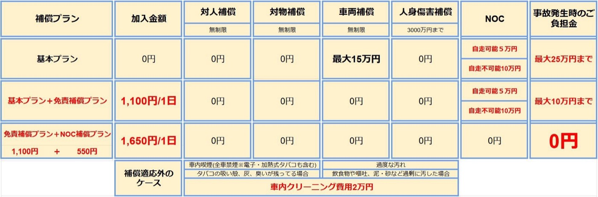
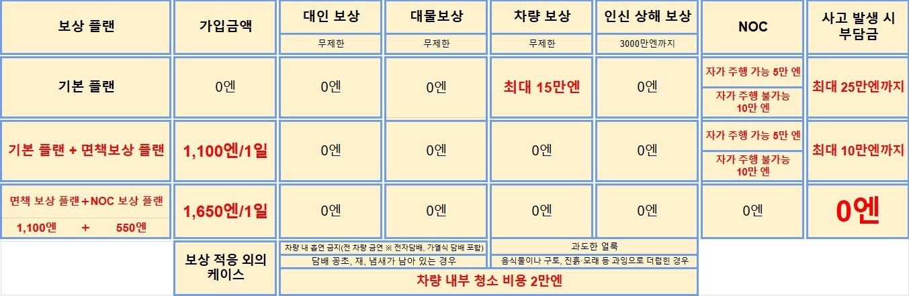
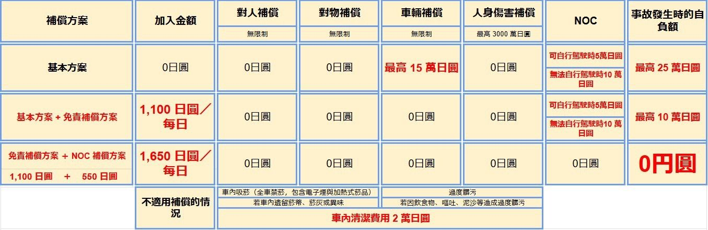

よくある質問
- 目次
【予約】
Q. どのように予約すればいいですか？
A. ご予約はオンラインのみで承っております。公式サイトにてご希望の車種・日程を選択し、カレンダーからご希望日をお選びください。
お支払いはクレジットカードによる事前決済となります。決済完了後に送られるメールに添付されている利用規約へ電子サインをいただき、ご契約が完了します。
Q. 電話での予約はできますか？
A. 原則としてインターネットからのご予約のみ承ります。不明点がある場合はお電話でもご案内いたします。
Q. いつから予約できますか？
A. ご利用開始日の180日前（約6か月前）からご予約可能です。シーズンや車両により前後する場合があります。
Q. 当日予約は可能ですか？
A. 可能です。ただし、在庫に限りがありますので、ハイシーズンや連休中のご利用はお早めのご予約をおすすめいたします。当日予約はお電話で受付いたします。
Q. 予約がなくても利用できますか？
A. 当日、車両の空きがある場合に限りご利用可能です。ご希望の車種がご用意できない場合もありますので、事前予約をおすすめいたします。
Q. 団体での利用はできますか？
A. 可能です。無料送迎バスはお荷物込みで20名までご乗車いただけます。複数台ご予約の場合は代表者様のみの送迎をお願いすることもございます。
Q.利用条件はありますか？
A.以下の条件を満たす方のみご利用可能です
(1) 満18歳以上である方
(2) 免許証取得後6ヶ月以上の方
(3) 過去2年以内に重大事故、重大違反がない方
(4) 弊社利用規約に同意頂ける方
(5) インターネット通信端末（スマートフォンなど）を持っている方
【変更・キャンセル】
Q. 日程や内容を変更したい
A. ご出発7日前であれば、予約キャンセル後に再予約をお願いいたします。6日前以降はキャンセル料が発生します。変更希望は店舗または公式LINEまでご相談ください。
Q. キャンセル料金はありますか？
A. 下記の通り申し受けます。
・6〜3日前：20％
・2〜1日前：30％
・当日以降：50％
Q. 台風などで旅行が中止になった場合は？
A. 航空便が欠航した場合、欠航証明書のご提示でキャンセル料は無料となります。欠航が確定する前や運航している便をご利用の場合は通常のキャンセルポリシーが適用されます。
【重要】キャンセル後に搭乗予定の便が欠航した場合につきましても、通常のキャンセル料金がかかります。キャンセル料金無料となります悪天候による欠航のためのキャンセルには、キャンセルのご連絡時に「航空会社発行の欠航証明」を併せて提示いただく必要があります。
Q. 返金のタイミングはいつですか？
A. クレジットカード会社を通じて行われ、反映まで1週間～1か月ほどかかる場合がございます。詳細はご利用のカード会社へご確認ください。
お支払い・領収書について
Q. 支払い方法は？
A. キャッシュレス決済をお願いしております。クレジットカード、デビットカード、交通系IC、QUICPay、ID、Visa/Mastercardのタッチ決済に対応しております。
QRコード決済（PayPay、LINE Payなど）は対応しておりません。
Q. 現金で支払いたい場合は？
A. 原則としてお受けしておりません。やむを得ず現金でのお支払いを希望される場合は、お釣りが出ないようにご準備ください。
Q. 領収書は発行できますか？
A. 公式サイトまたは現地決済でのご予約分は発行可能です。電子領収書のメール送信も対応しております。分割発行をご希望の場合は事前にスタッフへご相談ください。
【ご利用】
Q.当日までにやることはありますか？
A.当店公式LINEにご登録いただき、受付フォームのご回答をお願い致します。
リピート利用のお客様も予約毎に受付フォームの回答が必要となります。「リピート」と送信してください。
※受付フォームへの回答が完了しますとマイページをお知らせするURLが送信されます。マイページより運転者の登録（免許証の写真をアップロード）をお願い致します。運転を予定している方全員分必要となります。
Q. 当日の必要書類は？
A. 運転者全員の運転免許証（外国免許の方はパスポートも要）と、決済に使用するクレジットカードをご提示ください。
免許証をお忘れの場合は貸出できません。
Q. 国際免許証でも利用できますか？
A. ジュネーブ条約加盟国が発行した国際免許証とパスポートのご提示でご利用可能です。非加盟国の場合は日本語翻訳付き免許証が必要です。
警視庁HP：外国で取得した国際運転免許証で日本国内を運転するには 警視庁
Q. マイナ免許証は使えますか？
A. スマートフォンに「マイナ免許証読み取りアプリ」をインストールし、免許情報のスクリーンショットをマイページよりアップロードしてください。
Q. ペットを同乗させたい
A. 申し訳ございませんが、全車ペットの同乗はお断りしております。
Q. 車内で喫煙できますか？
A. 全車両禁煙（電子タバコ含む）です。喫煙が確認された場合、清掃費・営業補償として2万円を請求いたします。
Q. ETCやナビはありますか？
A. 全車両にETC車載器とカーナビを標準装備しております。ETCカードはお客様でご用意ください。ナビの地図は最新ではない場合がございます。
【送迎・デリバリー】
Q. 那覇空港からの送迎はありますか？
A. はい。レンタカー送迎バス乗り場【11-B】から、9:00〜19:00の間、毎時00分発で運行しています。返却後の送迎は毎時30分発です。
LINEお友達追加後、受付フォームのご回答をお願い致します。ご利用の送迎シャトル発車時刻にてご予約いただけます。お時間を変更される場合は、早める場合→変更後のお時間２時間前までに、遅らせる場合→元のご利用時間の２時間前までにカナラス変更のご連絡をお願い致します。送迎車の乗車人数調整のために必要となります。
Q. 那覇空港での貸出・返却は可能ですか？
A. 空港敷地内での受け渡しは条例により禁止されております。貸出は店舗第二駐車場にて行います。
Q. 宿泊先へのデリバリーはできますか？
A. 那覇市・豊見城市内のホテルや施設で受け渡しが可能です。直前の追加は2時間以上前までにご連絡ください。
デリバリーお届け・回収ともに各1500円となります。（オフィシャルサイトからのご予約は1000円です）
Q. 個別送迎や時間指定は可能ですか？
A. 定刻運行となっております。車椅子や大型荷物をお持ちの場合は事前にご相談ください。
【返却】
Q. 返却時の流れは？
A. 返却駐車場へお戻り後、車を頭から駐車し、鍵を運転席ドアポケットへお戻しください。お荷物をまとめてシャトルバスの到着をお待ちください。
Q. 給油は必要ですか？
A. 満タンでお貸出しいたしますので、返却時も満タンにてご返却ください。未給油の場合、スタッフへご相談ください。
Q. 忘れ物をしてしまいました
A. 公式LINEまたはお電話でご連絡ください。確認でき次第、スタッフよりご案内いたします。
Q.返却のみに変更しタクシーを呼びたい
A.駐車場到着後、鍵を運転席ドアポケットへお戻しください。
ガソリンゲージが満タンになっていることをご確認ください。
お忘れ物がないか再度ご確認いただき、タクシーの手配をしてください。
当店LINEへ、送迎不要 返却完了のご連絡をお願い致します。
【トラブル対応】
Q. 事故を起こしてしまった場合
A. 怪我の有無を確認後、警察・保険会社に連絡してください。その後、必ず当店にも速報をお願いします。
警察への届出・当店連絡を怠った場合、補償制度の対象外となることがあります。
Q. 少しこすっただけでも報告が必要ですか？
A. 必要です。小さな擦り傷でも事故証明がないと補償の適用外となります。
Q. 故障やトラブルが起こった場合
A. 安全な場所に停車し、すぐに公式LINEまたはお電話でご連絡ください。スタッフが対応いたします。
Q. 鍵を紛失・インキーした場合
A. 当店にご連絡ください。状況に応じてスタッフが対応いたします。
【その他】
Q. LINE登録の案内が届かない
A. 迷惑メールフォルダに振り分けられる場合があります。送信元は「reserve@rent-handyman.jp」です。ご確認ください。
Q. LINEを使用していません
A. 同行者の方のLINEでの登録をお願いしております。どなたもLINEをお持ちでない場合は、お電話で対応いたします。
Q. クーポンや割引はありますか？
A. 各予約サイト（OTA）で発行されているクーポンやポイントのご利用が可能です。
Q.子どものシート類 違いがわからない
A.ベビーシート

チャイルドシート

ジュニアシート

Q.免責補償、休業休車補償（NOC）について
A.以下の内容をご確認ください。
- 対人補償
1名につき限度額 無制限（自動車損害賠償責任保険を含む） - 対物補償
1事故につき限度額 無制限 （免責金額 0万円） - 車両補償
1事故につき限度額時価額 （免責金額 15万円） - 人身傷害補償
1名につき3000万円まで（但しレンタカー搭乗中のみ）
① レンタカー
・ レンタカーで自走し予定の返還場所に返還されなかった場合・・・・100,000 円
・ レンタカーで自走し予定の返還場所に返還された場合・・・・・・・50,000 円
② 備品
・ 使用不能の場合・・・・・・・・代替品の購入金額の 75%
・ 修理を要する場合・・・・・・・・修理日数×該当品の１日あたりのレンタル料金×50%
【解約手数料】 （貸渡契約で定めた借受期間の基本料金）－（貸渡しから解約による返還までの期間に対応する基本料金）×50％
・屋根・窓の閉め忘れにより、雨でナビが故障および車内クリーニングが必要と判断した場合。
・飲食物や砂・泥などで過剰に汚した場合。
・故意と見なされる車内外品の破損・装飾。車両の操作説明時の注意点にそむいた場合。
上記項目に当てはまる場合は『部品代(時価)+修理代』『クリーニング代 2万円』
・タイヤのバーストやホイールにリペアが必要な大きな傷をつけた場合。『リペア代5万円』




警視庁HP：外国で取得した国際運転免許証で日本国内を運転するには 警視庁
警視庁HP：外国で取得した国際運転免許証で日本国内を運転するには 警視庁
Frequently Asked Questions
- Table of Contents
[Reservations]
Q. How do I make a reservation?
A. Reservations are accepted online only. On our official website, select the vehicle type and schedule you would like, then choose your desired date from the calendar.
Payment is made in advance by credit card. After payment is complete, please provide an electronic signature on the Terms of Use attached to the email you receive, and your contract will be complete.
Q. Can I make a reservation by phone?
A. As a rule, we accept reservations via the internet only. If you have any questions, we are also happy to assist you by phone.
Q. How far in advance can I book?
A. Reservations can be made from 180 days (about 6 months) before your rental start date. This may vary depending on the season and vehicle.
Q. Can I make a same-day reservation?
A. Yes. However, availability is limited, so we recommend booking early if you plan to rent during peak season or holiday periods. Same-day reservations are accepted by phone.
Q. Can I rent a car without a reservation?
A. Only if a vehicle is available on the day. The vehicle type you want may not be available, so we recommend making a reservation in advance.
Q. Can groups use your service?
A. Yes. Our free shuttle bus can carry up to 20 people including luggage. If you reserve multiple vehicles, we may ask that only the group representative(s) ride the shuttle.
Q. Are there any rental requirements?
A. Only customers who meet all of the following conditions may rent:
(1) Be 18 years of age or older
(2) Have held a driver's license for at least 6 months
(3) Have had no serious accidents or serious traffic violations within the past 2 years
(4) Agree to our Terms of Use
(5) Have an internet-connected device (such as a smartphone)
[Changes & Cancellations]
Q. I want to change my dates or booking details
A. If it is 7 or more days before your departure, please cancel your reservation and then make a new one. From 6 days before, a cancellation fee will apply. For change requests, please contact the store or our official LINE account.
Q. Is there a cancellation fee?
A. Cancellation fees are charged as follows:
・6–3 days before: 20%
・2–1 days before: 30%
・On the day or later: 50%
Q. What if my trip is canceled due to a typhoon or similar?
A. If your flight is canceled, the cancellation fee will be waived upon presentation of a flight cancellation certificate. If you cancel before the flight cancellation is confirmed, or if your flight operates as scheduled, the standard cancellation policy applies.
[Important] Even if your scheduled flight is canceled after you have canceled your reservation, the standard cancellation fee will be charged. To have the cancellation fee waived for a cancellation due to a flight canceled for bad weather, you must present a "flight cancellation certificate issued by the airline" at the time you notify us of your cancellation.
Q. When will I receive my refund?
A. Refunds are processed through your credit card company and may take from 1 week to 1 month to be reflected. For details, please check with your card company.
About Payment and Receipts
Q. What payment methods are accepted?
A. We ask for cashless payment. We accept credit cards, debit cards, transportation IC cards, QUICPay, iD, and Visa/Mastercard contactless payments.
QR code payments (PayPay, LINE Pay, etc.) are not accepted.
Q. What if I want to pay in cash?
A. As a rule, we do not accept cash. If you must pay in cash, please prepare the exact amount so that no change is required.
Q. Can you issue a receipt?
A. Receipts can be issued for reservations made on our official website or paid on site. We can also send electronic receipts by email. If you would like the receipt split into multiple receipts, please consult our staff in advance.
[Using Your Rental]
Q. Is there anything I need to do before my rental day?
A. Please add our official LINE account and complete the reception form.
Repeat customers also need to complete the reception form for each reservation. Please send the message "リピート" (Repeat).
*Once you have completed the reception form, you will be sent a URL for your My Page. Please register the drivers (upload photos of their driver's licenses) from My Page. This is required for everyone who plans to drive.
Q. What documents do I need on the day?
A. Please present the driver's licenses of all drivers (a passport is also required for holders of foreign licenses) and the credit card used for payment.
If you forget your driver's license, we cannot rent the vehicle to you.
Q. Can I use an International Driving Permit?
A. You can rent with an International Driving Permit issued by a country that is a party to the Geneva Convention, together with your passport. For non-member countries, a license with an official Japanese translation is required.
Metropolitan Police Department website: Tokyo Metropolitan Police Department: Driving in Japan with an international driving permit
Q. Can I use a My Number Card driver's license (Myna license)?
A. Please install the "Myna License Reader App" (マイナ免許証読み取りアプリ) on your smartphone and upload a screenshot of your license information from My Page.
Q. I want to bring my pet
A. We are sorry, but pets are not allowed in any of our vehicles.
Q. Can I smoke in the car?
A. All vehicles are non-smoking (including e-cigarettes). If smoking is confirmed, we will charge 20,000 yen for cleaning costs and loss-of-business compensation.
Q. Do the cars have ETC and navigation?
A. All vehicles come standard with an ETC unit and car navigation system. Please bring your own ETC card. Navigation maps may not be the latest version.
[Shuttle & Delivery]
Q. Is there a shuttle from Naha Airport?
A. Yes. Shuttles depart from the rental car shuttle bus stop [11-B] every hour on the hour between 9:00 and 19:00. Shuttles after returning your car depart every hour at 30 minutes past the hour.
After adding us as a LINE friend, please complete the reception form. You can reserve by the departure time of the shuttle you will use. If you wish to change the time, please be sure to contact us: if moving it earlier, at least 2 hours before the new time; if moving it later, at least 2 hours before the original time. This is necessary to adjust the number of passengers on the shuttle.
Q. Can I pick up and return the car at Naha Airport?
A. Handing over vehicles on airport premises is prohibited by ordinance. Vehicle pick-up takes place at our store's second parking lot.
Q. Can you deliver the car to my accommodation?
A. We can hand over the car at hotels and facilities within Naha City and Tomigusuku City. For last-minute additions, please contact us at least 2 hours in advance.
Delivery and collection are 1,500 yen each. (1,000 yen for reservations made through our official website.)
Q. Can I request a private shuttle or a specific time?
A. Shuttles operate on a fixed schedule. If you have a wheelchair or large luggage, please consult us in advance.
[Returns]
Q. What is the return procedure?
A. After arriving at the return parking lot, park the car front-first and put the key back in the driver's door pocket. Gather your belongings and wait for the shuttle bus to arrive.
Q. Do I need to refuel?
A. The car is rented with a full tank, so please return it with a full tank. If you have not refueled, please consult our staff.
Q. I left something behind
A. Please contact us via our official LINE account or by phone. Our staff will get back to you as soon as we have checked.
Q. I want to just return the car and call a taxi instead
A. After arriving at the parking lot, put the key back in the driver's door pocket.
Please make sure the fuel gauge shows full.
Check once more that you have not left anything behind, then arrange your taxi.
Please send a message to our LINE account saying that you do not need the shuttle and that the return is complete.
[Troubleshooting]
Q. If I have an accident
A. After checking whether anyone is injured, contact the police and the insurance company. Then be sure to notify our store promptly as well.
If you fail to report to the police or contact our store, you may not be covered by the compensation system.
Q. Do I need to report it even if I only lightly scraped the car?
A. Yes. Even for a small scratch, compensation will not apply without an accident certificate.
Q. If the car breaks down or there is a problem
A. Stop in a safe place and contact us immediately via our official LINE account or by phone. Our staff will assist you.
Q. If I lose the key or lock it inside the car
A. Please contact our store. Our staff will respond according to the situation.
[Other]
Q. I haven't received the LINE registration instructions
A. The email may have been sorted into your spam folder. The sender is "reserve@rent-handyman.jp". Please check.
Q. I don't use LINE
A. We ask that you register using the LINE account of someone traveling with you. If no one in your party has LINE, we will assist you by phone.
Q. Are there any coupons or discounts?
A. You can use coupons and points issued by each booking site (OTA).
Q. I don't know the difference between the types of child seats
A. Baby seat
Child seat
Junior seat (booster seat)
Q. About the Collision Damage Waiver and Non-Operation Charge (NOC)
A. Please review the following details.
- Bodily injury liability
Unlimited per person (including compulsory automobile liability insurance) - Property damage liability
Unlimited per accident (deductible: 0 yen) - Vehicle damage coverage
Up to the market value per accident (deductible: 150,000 yen) - Personal injury coverage
Up to 30 million yen per person (only while riding in the rental car)
① Rental car
・ If the rental car is not driven back to the scheduled return location under its own power..........100,000 yen
・ If the rental car is driven back to the scheduled return location under its own power..........50,000 yen
② Equipment
・ If unusable..........75% of the purchase price of a replacement
・ If repair is required..........Number of repair days × daily rental fee for the item × 50%
[Cancellation fee for early termination] (Basic fee for the rental period specified in the rental contract) − (Basic fee corresponding to the period from rental until return due to termination) × 50%
・If the navigation system is damaged by rain or interior cleaning is deemed necessary because the roof or windows were left open.
・If the vehicle is excessively soiled with food, drinks, sand, mud, etc.
・Damage to or decoration of interior or exterior parts deemed intentional. Failure to follow the precautions given during the vehicle operation explanation.
If any of the above apply: "Parts cost (market value) + repair cost" and "Cleaning fee of 20,000 yen"
・If a tire bursts or a wheel is scratched badly enough to require repair: "Repair fee of 50,000 yen"
Metropolitan Police Department website: Tokyo Metropolitan Police Department: Driving in Japan with an international driving permit
Metropolitan Police Department website: Tokyo Metropolitan Police Department: Driving in Japan with an international driving permit
常見問題
- 目錄
【預約】
Q. 該如何預約？
A. 本店僅接受線上預約。請於官方網站選擇您希望的車型與日程，並從日曆中選擇希望的日期。
付款方式為信用卡預先付款。付款完成後，請於寄送給您的電子郵件所附的使用條款上進行電子簽名，即完成租賃契約。
Q. 可以電話預約嗎？
A. 原則上僅接受網路預約。如有不明之處，也可透過電話為您說明。
Q. 從什麼時候開始可以預約？
A. 自租車開始日前180天（約6個月前）起即可預約。依季節及車輛不同，可能會有所調整。
Q. 可以當天預約嗎？
A. 可以。但由於車輛數量有限，旺季或連假期間使用時，建議您儘早預約。當天預約請以電話受理。
Q. 沒有預約也能租車嗎？
A. 僅限當天有空車時可以使用。可能無法提供您希望的車型，因此建議事先預約。
Q. 可以團體使用嗎？
A. 可以。免費接送巴士連同行李最多可搭乘20人。預約多台車輛時，可能會請您僅由代表人搭乘接送車。
Q. 有租車條件嗎？
A. 僅限符合以下條件者租用：
(1) 年滿18歲以上
(2) 取得駕照滿6個月以上
(3) 過去2年內無重大事故、重大違規
(4) 同意本公司使用條款
(5) 持有可上網的通訊裝置（智慧型手機等）
【變更・取消】
Q. 想變更日程或預約內容
A. 若在出發7天前，請先取消預約後再重新預約。出發前6天起將產生取消費用。如需變更，請與店舖或官方LINE聯繫洽詢。
Q. 有取消費用嗎？
A. 將依下列標準收取：
・出發前6〜3天：20％
・出發前2〜1天：30％
・當天及之後：50％
Q. 因颱風等原因取消旅行時怎麼辦？
A. 若航班停飛，出示停飛證明即可免收取消費用。在停飛確定前取消，或所搭乘航班正常起飛時，將適用一般取消規定。
【重要】取消預約後，即使原定搭乘的航班停飛，仍須支付一般取消費用。因惡劣天候停飛而取消並適用免收取消費用時，須於聯繫取消時一併出示「航空公司開立的停飛證明」。
Q. 退款何時入帳？
A. 退款將透過信用卡公司辦理，反映至帳戶可能需要1週至1個月左右。詳情請洽詢您所使用的信用卡公司。
關於付款・收據
Q. 付款方式有哪些？
A. 本店採無現金付款。可使用信用卡、金融卡（Debit卡）、交通系IC卡、QUICPay、iD、Visa/Mastercard感應支付。
不支援QR碼支付（PayPay、LINE Pay等）。
Q. 想用現金付款怎麼辦？
A. 原則上不接受現金。若不得已需以現金付款，請準備剛好的金額，以免需要找零。
Q. 可以開立收據嗎？
A. 於官方網站預約或現場付款的訂單可開立收據，也可透過電子郵件寄送電子收據。如需分開開立，請事先與工作人員洽詢。
【租車使用】
Q. 租車當天之前需要做什麼嗎？
A. 請加入本店官方LINE，並填寫受理表單。
回頭客每次預約也都需要填寫受理表單。請傳送「リピート」（回頭客）。
※填寫完受理表單後，系統將傳送「我的頁面」網址給您。請從「我的頁面」登錄駕駛人（上傳駕照照片）。所有預計駕駛的人都需要登錄。
Q. 當天需要攜帶哪些文件？
A. 請出示所有駕駛人的駕照（持外國駕照者另需護照），以及付款時使用的信用卡。
若忘記攜帶駕照，將無法出租車輛。
Q. 國際駕照可以使用嗎？
A. 出示日內瓦公約締約國所核發的國際駕照及護照即可租車。非締約國者，需持有駕照及其日文譯本。
警視廳網站：警視廳：持外國核發之國際駕照在日本駕駛
Q. 可以使用個人編號卡駕照（Myna駕照）嗎？
A. 請於智慧型手機安裝「Myna駕照讀取App」（マイナ免許証読み取りアプリ），並從「我的頁面」上傳駕照資訊的螢幕截圖。
Q. 想帶寵物同行
A. 很抱歉，所有車輛均不接受寵物同乘。
Q. 車內可以吸菸嗎？
A. 所有車輛全面禁菸（包含電子菸）。若經確認有吸菸情形，將收取清潔費及營業損失補償共2萬日圓。
Q. 有ETC和導航嗎？
A. 所有車輛皆標準配備ETC車載機與汽車導航。ETC卡請自行準備。導航地圖可能並非最新版本。
【接送・送車服務】
Q. 有那霸機場的接送服務嗎？
A. 有的。從租車接送巴士乘車處【11-B】出發，9:00〜19:00之間每小時整點發車。還車後的接送為每小時30分發車。
加入LINE好友後，請填寫受理表單。可依您搭乘的接送車發車時刻進行預約。如需變更時間，提前時→請於變更後時間的2小時前；延後時→請於原定使用時間的2小時前，務必與我們聯繫變更。此為調整接送車乘車人數所需。
Q. 可以在那霸機場取車・還車嗎？
A. 依條例規定，禁止於機場範圍內交接車輛。取車於本店第二停車場進行。
Q. 可以送車到住宿地點嗎？
A. 可於那霸市・豐見城市內的飯店或設施交車。臨時追加請於2小時前以上聯繫。
送車・取回各為1500日圓。（透過官方網站預約為1000日圓）
Q. 可以個別接送或指定時間嗎？
A. 接送車依固定班次運行。如有輪椅或大型行李，請事先洽詢。
【還車】
Q. 還車流程為何？
A. 回到還車停車場後，請將車頭朝內停車，並將鑰匙放回駕駛座車門置物袋。請整理好行李，等候接駁巴士到來。
Q. 需要加油嗎？
A. 出租時為滿油狀態，還車時也請加滿油後歸還。未加油時，請與工作人員洽詢。
Q. 我有東西忘在車上
A. 請透過官方LINE或電話與我們聯繫。確認後將由工作人員為您說明。
Q. 想改為只還車並自行叫計程車
A. 抵達停車場後，請將鑰匙放回駕駛座車門置物袋。
請確認油錶已顯示滿油。
請再次確認沒有遺留物品，再自行叫計程車。
請透過本店LINE告知「不需接送・已完成還車」。
【問題處理】
Q. 發生事故時
A. 確認有無人員受傷後，請聯繫警察及保險公司。之後也務必盡快通知本店。
若未向警察報案或未聯繫本店，可能無法適用補償制度。
Q. 只是輕微擦撞也需要報告嗎？
A. 需要。即使是小擦傷，若無事故證明，也將不適用補償。
Q. 車輛故障或發生問題時
A. 請將車停在安全的地方，並立即透過官方LINE或電話與我們聯繫。工作人員將為您處理。
Q. 遺失鑰匙或將鑰匙鎖在車內時
A. 請與本店聯繫。工作人員將視情況為您處理。
【其他】
Q. 沒有收到LINE登錄的通知
A. 可能被歸類至垃圾郵件資料夾。寄件人為「reserve@rent-handyman.jp」，請確認。
Q. 我沒有使用LINE
A. 請以同行者的LINE進行登錄。若所有人皆無LINE，將以電話為您服務。
Q. 有優惠券或折扣嗎？
A. 可使用各訂車網站（OTA）所發行的優惠券或點數。
Q. 不清楚兒童座椅類型的差別
A. 嬰兒座椅
兒童座椅
學童座椅（增高座墊）
Q. 關於免責補償、停業補償（NOC）
A. 請確認以下內容。
- 對人補償
每人賠償上限 無上限（含汽車強制責任保險） - 對物補償
每次事故賠償上限 無上限（自負額 0萬日圓） - 車輛補償
每次事故以車輛市價為上限（自負額 15萬日圓） - 人身傷害補償
每人最高3000萬日圓（僅限搭乘租賃車輛期間）
① 租賃車輛
・ 租賃車輛未能自行駕駛歸還至預定還車地點時・・・・100,000 日圓
・ 租賃車輛可自行駕駛歸還至預定還車地點時・・・・・・・50,000 日圓
② 配備用品
・ 無法使用時・・・・・・・・替代品購買金額的 75%
・ 需要修理時・・・・・・・・修理天數×該用品每日租金×50%
【解約手續費】 （租賃契約所訂租用期間的基本費用）－（自出租至因解約而歸還期間所對應的基本費用）×50％
・因忘記關閉車頂・車窗，導致導航因雨故障，或經判斷需進行車內清潔時。
・因飲食、沙土、泥巴等造成過度髒污時。
・被視為故意的車內外物品損壞・裝飾。違反車輛操作說明時所告知的注意事項時。
符合上述項目時，將收取『零件費（市價）＋修理費』『清潔費 2萬日圓』
・輪胎爆胎或輪框造成需修復的大面積刮傷時。『修復費5萬日圓』
警視廳網站：警視廳：持外國核發之國際駕照在日本駕駛
警視廳網站：警視廳：持外國核發之國際駕照在日本駕駛
자주 묻는 질문
- 목차
【예약】
Q. 어떻게 예약하면 되나요?
A. 예약은 온라인으로만 받고 있습니다. 공식 사이트에서 원하시는 차종과 일정을 선택하신 후, 캘린더에서 희망 날짜를 선택해 주세요.
결제는 신용카드 사전 결제입니다. 결제 완료 후 발송되는 이메일에 첨부된 이용 약관에 전자 서명을 해 주시면 계약이 완료됩니다.
Q. 전화로 예약할 수 있나요?
A. 원칙적으로 인터넷 예약만 받고 있습니다. 궁금한 점이 있으시면 전화로도 안내해 드립니다.
Q. 언제부터 예약할 수 있나요?
A. 이용 시작일 180일 전(약 6개월 전)부터 예약 가능합니다. 시즌이나 차량에 따라 달라질 수 있습니다.
Q. 당일 예약이 가능한가요?
A. 가능합니다. 다만 차량 수에 한정이 있으므로, 성수기나 연휴 기간에 이용하실 경우에는 서둘러 예약하시기를 권장합니다. 당일 예약은 전화로 접수합니다.
Q. 예약 없이도 이용할 수 있나요?
A. 당일 차량에 여유가 있는 경우에 한해 이용 가능합니다. 원하시는 차종을 준비하지 못할 수도 있으므로 사전 예약을 권장합니다.
Q. 단체로 이용할 수 있나요?
A. 가능합니다. 무료 셔틀버스는 짐을 포함하여 최대 20명까지 탑승하실 수 있습니다. 여러 대를 예약하신 경우에는 대표자분만 셔틀을 이용해 주시도록 부탁드릴 수도 있습니다.
Q. 이용 조건이 있나요?
A. 아래 조건을 충족하는 분만 이용 가능합니다.
(1) 만 18세 이상인 분
(2) 운전면허 취득 후 6개월 이상 경과한 분
(3) 최근 2년 이내에 중대 사고나 중대 위반이 없는 분
(4) 당사 이용 약관에 동의하시는 분
(5) 인터넷 통신 단말기(스마트폰 등)를 소지하신 분
【변경・취소】
Q. 일정이나 내용을 변경하고 싶어요
A. 출발 7일 전이라면 예약을 취소하신 후 다시 예약해 주세요. 6일 전부터는 취소 수수료가 발생합니다. 변경을 원하시는 경우 매장 또는 공식 LINE으로 문의해 주세요.
Q. 취소 수수료가 있나요?
A. 아래와 같이 부과됩니다.
・6~3일 전: 20%
・2~1일 전: 30%
・당일 이후: 50%
Q. 태풍 등으로 여행이 취소된 경우는요?
A. 항공편이 결항된 경우, 결항 증명서를 제시하시면 취소 수수료가 무료입니다. 결항이 확정되기 전이거나 운항하는 항공편을 이용하시는 경우에는 일반 취소 정책이 적용됩니다.
【중요】예약 취소 후에 탑승 예정이던 항공편이 결항된 경우에도 일반 취소 수수료가 부과됩니다. 취소 수수료가 무료가 되는 악천후로 인한 결항 취소의 경우, 취소 연락 시 '항공사 발행 결항 증명서'를 함께 제시해 주셔야 합니다.
Q. 환불은 언제 되나요?
A. 신용카드사를 통해 처리되며, 반영까지 1주일~1개월 정도 걸릴 수 있습니다. 자세한 내용은 이용하시는 카드사에 확인해 주세요.
결제・영수증 안내
Q. 결제 방법은 무엇인가요?
A. 캐시리스 결제를 부탁드리고 있습니다. 신용카드, 직불카드(데빗카드), 교통계 IC카드, QUICPay, iD, Visa/Mastercard 터치 결제를 이용하실 수 있습니다.
QR코드 결제(PayPay, LINE Pay 등)는 이용하실 수 없습니다.
Q. 현금으로 결제하고 싶은 경우는요?
A. 원칙적으로 받지 않습니다. 부득이하게 현금 결제를 원하시는 경우에는 거스름돈이 나오지 않도록 정확한 금액을 준비해 주세요.
Q. 영수증을 발행할 수 있나요?
A. 공식 사이트 또는 현지 결제로 예약하신 건은 발행 가능합니다. 전자 영수증 이메일 발송도 가능합니다. 분할 발행을 원하시는 경우 사전에 직원에게 문의해 주세요.
【이용】
Q. 이용일 전까지 해야 할 일이 있나요?
A. 당사 공식 LINE에 등록하신 후 접수 양식에 답변해 주세요.
재이용 고객님도 예약할 때마다 접수 양식 답변이 필요합니다. "リピート"(재이용)라고 보내 주세요.
※접수 양식 답변이 완료되면 마이페이지 안내 URL이 발송됩니다. 마이페이지에서 운전자 등록(운전면허증 사진 업로드)을 해 주세요. 운전 예정인 분 전원의 등록이 필요합니다.
Q. 당일 필요한 서류는 무엇인가요?
A. 운전자 전원의 운전면허증(외국 면허 소지자는 여권도 필요)과 결제에 사용한 신용카드를 제시해 주세요.
운전면허증을 잊으신 경우 대여가 불가합니다.
Q. 국제운전면허증으로도 이용할 수 있나요?
A. 제네바 협약 가맹국에서 발급한 국제운전면허증과 여권을 제시하시면 이용 가능합니다. 비가맹국의 경우 일본어 번역문이 첨부된 운전면허증이 필요합니다.
경시청 홈페이지: 경시청: 외국에서 취득한 국제운전면허증으로 일본에서 운전하려면
Q. 마이나 면허증(마이넘버카드 일체형 면허증)을 사용할 수 있나요?
A. 스마트폰에 '마이나 면허증 판독 앱'(マイナ免許証読み取りアプリ)을 설치하신 후, 면허 정보 스크린샷을 마이페이지에서 업로드해 주세요.
Q. 반려동물을 동승시키고 싶어요
A. 죄송하지만 모든 차량에 반려동물 동승은 불가합니다.
Q. 차 안에서 흡연할 수 있나요?
A. 모든 차량은 금연(전자담배 포함)입니다. 흡연이 확인된 경우 청소비・영업 보상으로 2만 엔을 청구합니다.
Q. ETC나 내비게이션이 있나요?
A. 모든 차량에 ETC 단말기와 카 내비게이션이 기본 장착되어 있습니다. ETC 카드는 고객님께서 준비해 주세요. 내비게이션 지도는 최신 버전이 아닐 수 있습니다.
【송영・딜리버리】
Q. 나하공항에서 송영 서비스가 있나요?
A. 네. 렌터카 송영 버스 승차장【11-B】에서 9:00~19:00 사이 매시 정각에 출발합니다. 반납 후 송영은 매시 30분에 출발합니다.
LINE 친구 추가 후 접수 양식에 답변해 주세요. 이용하실 송영 셔틀 출발 시각으로 예약하실 수 있습니다. 시간을 변경하시는 경우, 앞당기실 때→변경 후 시간의 2시간 전까지, 늦추실 때→원래 이용 시간의 2시간 전까지 반드시 변경 연락을 부탁드립니다. 송영 차량의 탑승 인원 조정을 위해 필요합니다.
Q. 나하공항에서 대여・반납이 가능한가요?
A. 조례에 의해 공항 부지 내에서의 차량 인수인계는 금지되어 있습니다. 대여는 매장 제2주차장에서 진행합니다.
Q. 숙소로 딜리버리가 가능한가요?
A. 나하시・도미구스쿠시 내의 호텔이나 시설에서 인수인계가 가능합니다. 직전 추가는 2시간 전까지 연락해 주세요.
딜리버리 배송・회수는 각 1500엔입니다.(공식 사이트에서 예약하신 경우 1000엔입니다)
Q. 개별 송영이나 시간 지정이 가능한가요?
A. 정해진 시각에 운행하고 있습니다. 휠체어나 대형 짐이 있으신 경우 사전에 문의해 주세요.
【반납】
Q. 반납 절차는 어떻게 되나요?
A. 반납 주차장에 도착하시면 차를 전면 주차하시고, 열쇠를 운전석 도어 포켓에 넣어 주세요. 짐을 정리하신 후 셔틀버스 도착을 기다려 주세요.
Q. 주유가 필요한가요?
A. 연료를 가득 채운 상태로 대여해 드리므로, 반납 시에도 가득 채워서 반납해 주세요. 주유하지 못하신 경우 직원에게 문의해 주세요.
Q. 분실물이 있어요
A. 공식 LINE 또는 전화로 연락해 주세요. 확인되는 대로 직원이 안내해 드립니다.
Q. 반납만 하고 택시를 부르고 싶어요
A. 주차장 도착 후 열쇠를 운전석 도어 포켓에 넣어 주세요.
연료 게이지가 가득 차 있는지 확인해 주세요.
잊으신 물건이 없는지 다시 한번 확인하신 후 택시를 불러 주세요.
당사 LINE으로 '송영 불필요, 반납 완료' 연락을 부탁드립니다.
【문제 발생 시 대응】
Q. 사고가 났을 경우
A. 부상 여부를 확인한 후 경찰과 보험회사에 연락해 주세요. 그 후 반드시 당사에도 신속히 알려 주세요.
경찰 신고나 당사 연락을 하지 않으신 경우 보상 제도의 대상에서 제외될 수 있습니다.
Q. 살짝 긁힌 정도여도 보고가 필요한가요?
A. 필요합니다. 작은 긁힘이라도 사고 증명이 없으면 보상이 적용되지 않습니다.
Q. 고장이나 문제가 발생한 경우
A. 안전한 장소에 정차하신 후 즉시 공식 LINE 또는 전화로 연락해 주세요. 직원이 대응해 드립니다.
Q. 열쇠를 분실하거나 차 안에 두고 문을 잠근 경우
A. 당사로 연락해 주세요. 상황에 따라 직원이 대응해 드립니다.
【기타】
Q. LINE 등록 안내가 오지 않아요
A. 스팸 메일함으로 분류되었을 수 있습니다. 발신자는 "reserve@rent-handyman.jp"입니다. 확인해 주세요.
Q. LINE을 사용하지 않아요
A. 동행자분의 LINE으로 등록해 주시기 바랍니다. 아무도 LINE을 사용하지 않으시는 경우에는 전화로 대응해 드립니다.
Q. 쿠폰이나 할인이 있나요?
A. 각 예약 사이트(OTA)에서 발행하는 쿠폰이나 포인트를 이용하실 수 있습니다.
Q. 어린이용 시트 종류의 차이를 모르겠어요
A. 베이비 시트
카시트(차일드 시트)
주니어 시트(부스터 시트)
Q. 면책 보상, 휴업 휴차 보상(NOC)에 대해
A. 아래 내용을 확인해 주세요.
- 대인 보상
1인당 한도액 무제한(자동차 손해배상 책임보험 포함) - 대물 보상
1사고당 한도액 무제한 (면책 금액 0만 엔) - 차량 보상
1사고당 한도액 시가 (면책 금액 15만 엔) - 인신 상해 보상
1인당 3000만 엔까지(단, 렌터카 탑승 중에 한함)
① 렌터카
・ 렌터카를 자력 주행하여 예정된 반납 장소에 반납하지 못한 경우・・・・100,000 엔
・ 렌터카를 자력 주행하여 예정된 반납 장소에 반납한 경우・・・・・・・50,000 엔
② 비품
・ 사용 불가능한 경우・・・・・・・・대체품 구입 금액의 75%
・ 수리가 필요한 경우・・・・・・・・수리 일수×해당 물품의 1일당 대여 요금×50%
【해약 수수료】 (대여 계약에서 정한 대여 기간의 기본 요금)－(대여부터 해약에 의한 반환까지의 기간에 해당하는 기본 요금)×50%
・지붕・창문을 닫지 않아 비로 인해 내비게이션이 고장 나거나 차내 클리닝이 필요하다고 판단된 경우.
・음식물이나 모래・진흙 등으로 과도하게 더럽힌 경우.
・고의로 간주되는 차량 내외부 물품의 파손・장식. 차량 조작 설명 시의 주의사항을 지키지 않은 경우.
위 항목에 해당하는 경우 『부품비(시가)+수리비』『클리닝비 2만 엔』
・타이어 펑크(파열)나 휠에 수리가 필요한 큰 흠집을 낸 경우. 『수리비 5만 엔』
경시청 홈페이지: 경시청: 외국에서 취득한 국제운전면허증으로 일본에서 운전하려면
경시청 홈페이지: 경시청: 외국에서 취득한 국제운전면허증으로 일본에서 운전하려면